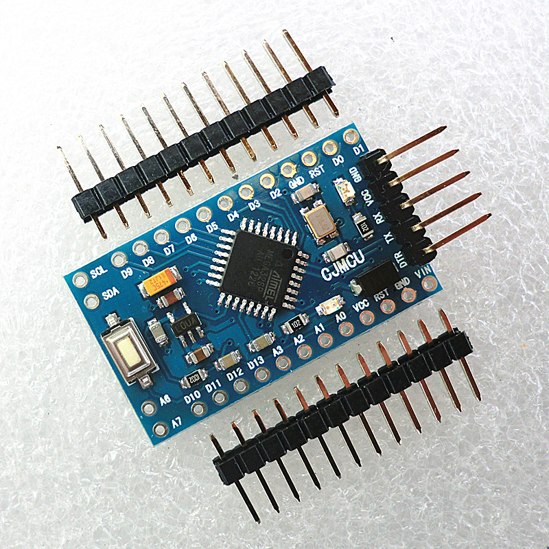

| 作者: | gashero |
|---|---|
| 日期: | 2013-10-13 |
是一系列的，以插针为主要对外接口的板子，本身不带USB接口，需要使用外部编程器，价格非常便宜，甚至可以做到15元，基本上也就是PCB+芯片了。
参考文献：
17元一个，有扩展的A6和A7。我手里有3-4个。5V/16MHz，ATmega328P-AU。
提供6个PWM端口：D3、D5、D6、D9、D10、D11。8个模拟输入：A0~A7。
外部电源超过5.5V时，从VIN输入。外部电源3.3V~5.5V时从5V脚输入。
板子上没有标注A4、A5，却有SCL和SDA。事实上A4=SDA，A5=SCL。
LED都是PB5/SCK。
可见其引脚排列。而各个Arduino定义的引脚与MCU的映射(ATmega328P-AU)：
| AD | PIN | MCU |
| D0 | 39 | PD0/RXD |
| D1 | 31 | PD1/TXD |
| D2 | 32 | PD2/INT0 |
| D3 | 1 | PD3/INT1/OC2B |
| D4 | 2 | PD4/T0/XCK |
| D5 | 9 | PD5/T1/OC0B |
| D6 | 10 | PD6/AIN0/OC0A |
| D7 | 11 | PD7/AIN1/ |
| D8 | 12 | PB0/ICP1/CLKO |
| D9 | 13 | PB1/OC1A |
| D10 | 14 | PB2/SS/OC1B |
| D11 | 15 | PB3/MOSI/OC2A |
| D12 | 16 | PB4/MISO |
| D13 | 17 | PB5/SCK |
| A0 | 23 | PC0/ADC0 |
| A1 | 24 | PC1/ADC1 |
| A2 | 25 | PC2/ADC2 |
| A3 | 26 | PC3/ADC3 |
| A4 | 27 | PC4/ADC4/SDA |
| A5 | 28 | PC5/ADC5/SCL |
| A6 | 19 | ADC6 |
| A7 | 22 | ADC7 |
事实上Arduino的这些板子，确实是把所有有用的引脚都引出了。所以作为自己玩也是很靠谱的。毕竟板子上做好了贴片的有源晶振，编程口也相对靠谱。